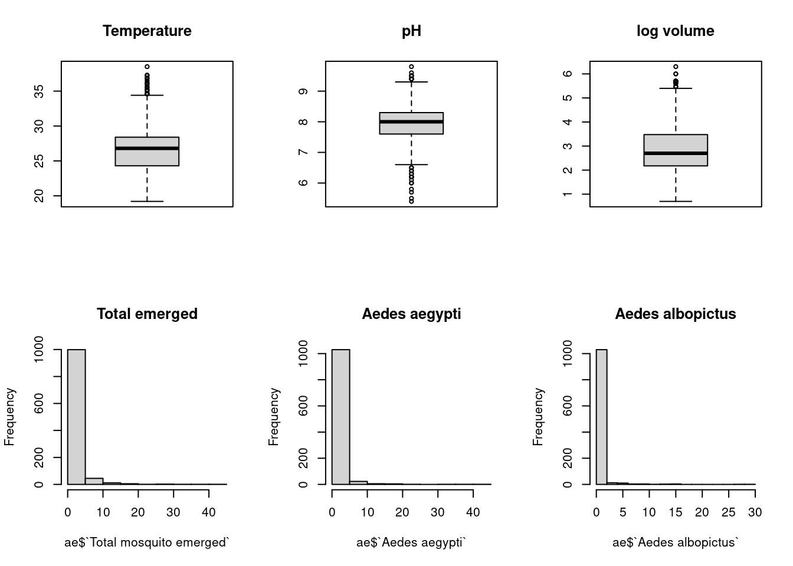
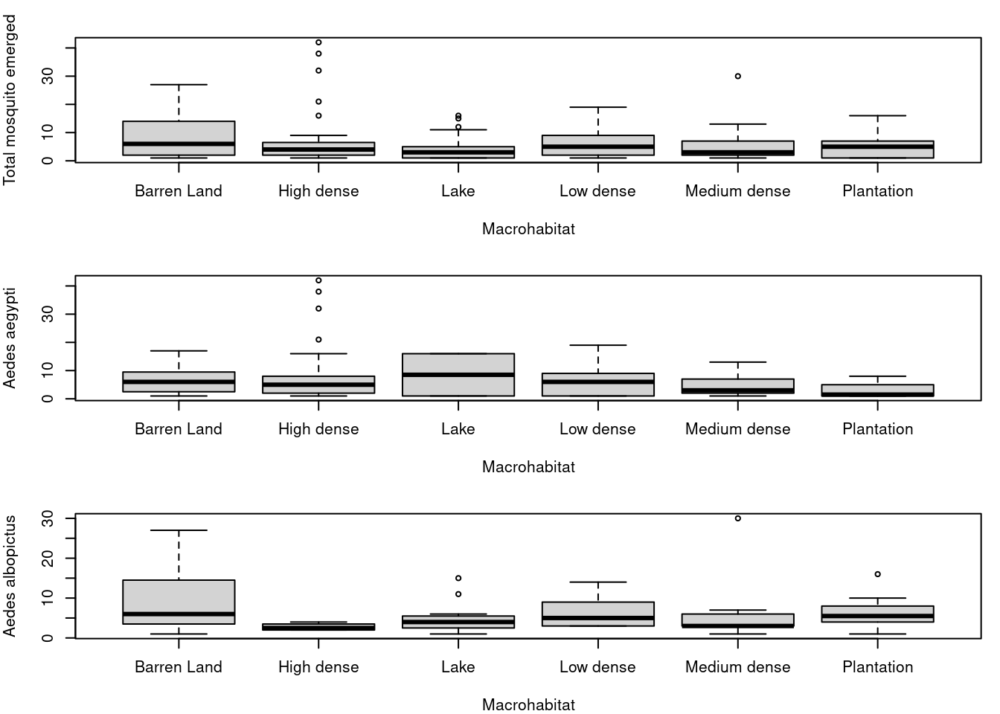
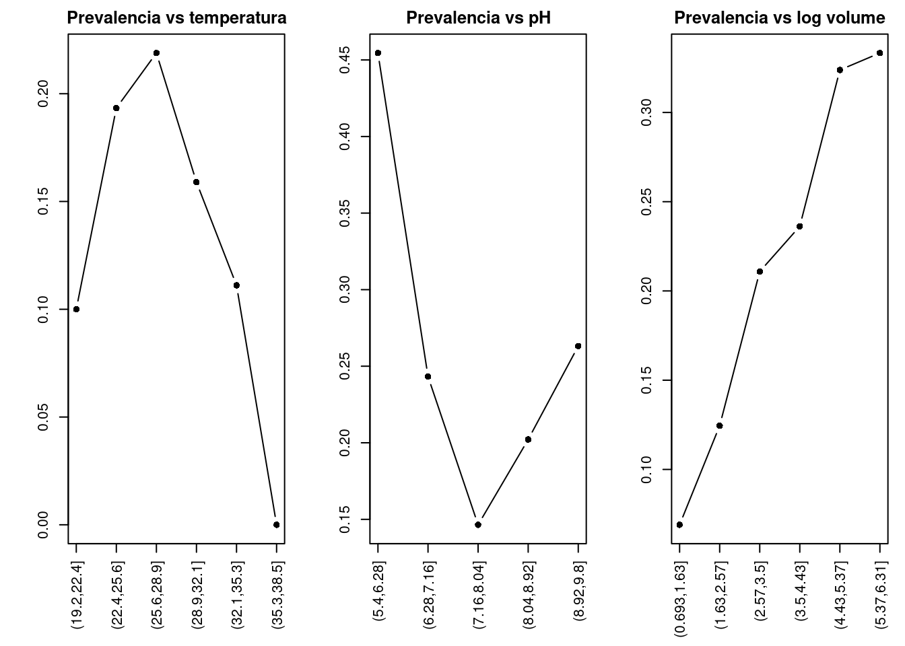
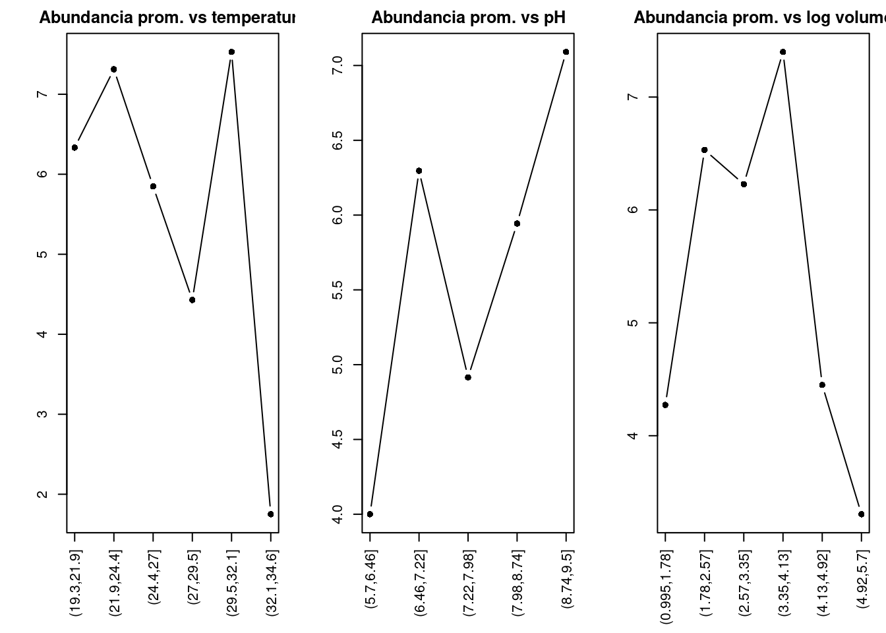
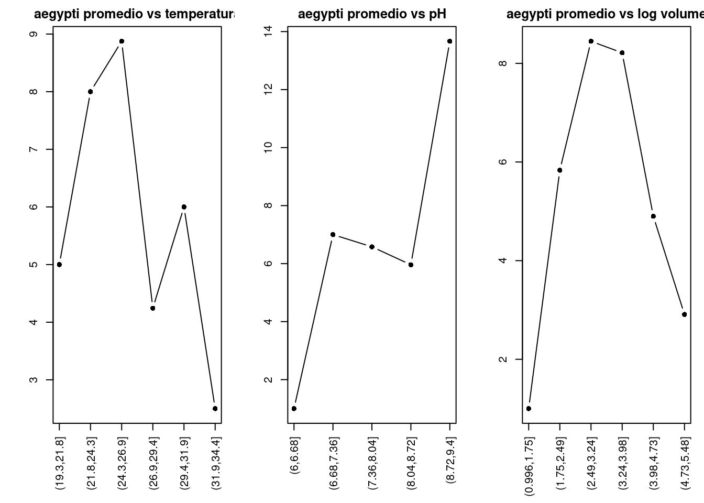
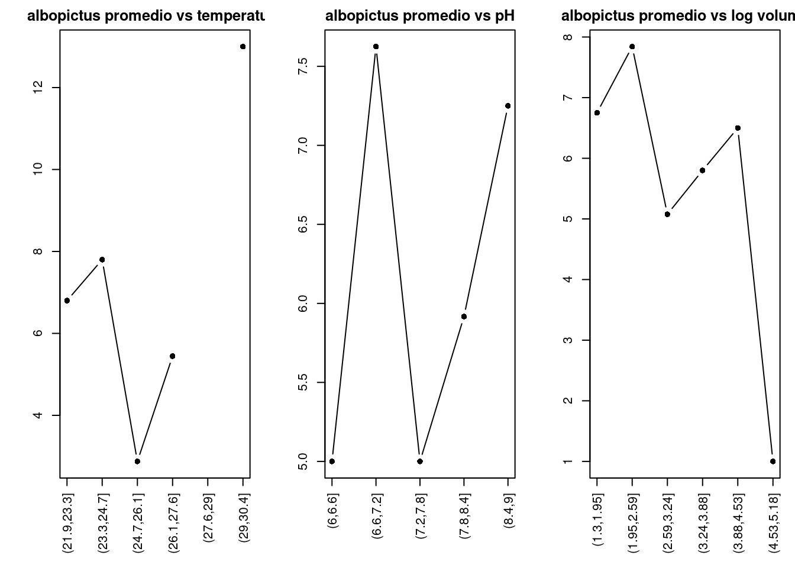

Durante la exploración de la base se observó que variables como Sl.no y Container number no identificaban criaderos únicos de manera consistente. Por este motivo, se construyó un identificador combinando latitud, longitud, número de contenedor y fecha de muestreo.
Con esta combinación se obtuvieron 8720 identificadores únicos sobre 8772 filas totales, lo que indica que la gran mayoría de las filas representan observaciones individuales de criaderos. En consecuencia, para el análisis se consideró cada fila como una unidad observacional de criadero.
Además, se observó que múltiples criaderos podían compartir una misma ubicación espacial, lo que sugiere una estructura agrupada dentro de sitios y grillas y justifica considerar dependencia entre observaciones en el modelado.
Analizamos outliers gráficamente con boxplots e histogramas
par(mfrow =c(2,3))boxplot(ae$Temperature, main ="Temperature")boxplot(ae$pH, main ="pH")boxplot(ae$`log volume`, main ="log volume")# Calculamos proporcion de ceroscat("Total mosquito emerged: ")
Total mosquito emerged:
mean(ae$`Total mosquito emerged`==0)
[1] 0.8330206
cat("Aedes aegypti: ")
Aedes aegypti:
mean(ae$`Aedes aegypti`==0)
[1] 0.9193246
cat("Aedes albopictus: ")
Aedes albopictus:
mean(ae$`Aedes albopictus`==0)
[1] 0.956848
# Analizamos los histogramas de las variables de abundanciahist(ae$`Total mosquito emerged`, main="Total emerged")hist(ae$`Aedes aegypti`, main="Aedes aegypti")hist(ae$`Aedes albopictus`, main="Aedes albopictus")

En las variables de abundancia, la gran cantidad de ceros genera una fuerte asimetría, lo que provoca que los boxplots resulten poco informativos (cajas achatdas en torno a cero). Por este motivo, se opta por no utilizarlos para estas variables y analizar la distribución mediante proporción de ceros e histogramas.
Conclusiones:
Se observa una alta proporción de ceros en las variables de abundancia, lo que indica una distribución altamente asimétrica y sugiere la presencia de exceso de ceros. Esto implica que el modelo debe tener en cuenta el exceso de ceros, ya que la distribución observada no es compatible con modelos simples.
Paso 2: Homogeneidad de la varianza
Dado que las variables de abundancia tienen exceso de ceros, esto achata los boxplots, para salvar este inconveniente y poder observar diferencias en los boxplot, se analiza la abundancia condicionada a la presencia (se eliminan los ceros).
par(mfrow =c(3,1), mar=c(4,4,2,1))boxplot(`Total mosquito emerged`~ Microhabitat, data = ae_tot)boxplot(`Aedes aegypti`~ Microhabitat, data = ae_aeg)boxplot(`Aedes albopictus`~ Microhabitat, data = ae_albo)
par(mfrow =c(3,1), mar=c(4,4,2,1))boxplot(`Total mosquito emerged`~ Macrohabitat, data = ae_tot)boxplot(`Aedes aegypti`~ Macrohabitat, data = ae_aeg)boxplot(`Aedes albopictus`~ Macrohabitat, data = ae_albo)

Al analizar únicamente los valores positivos, se observan diferencias en la distribución de la abundancia entre estaciones.
La variable total muestra mayor dispersión en feb–march y july–september,indicando variación estacional en la abundancia.
Aedes aegypti presenta un patrón similar al total, con presencia en varias estaciones.
En cambio, Aedes albopictus muestra un comportamiento más concentrado, con mayor abundancia en april-june y baja presencia en el resto.
Ambas especies muestran dinámicas diferentes, por lo que el uso de la abundancia total podría ocultar patrones específicos.
Paso 3: Distribución de la variable respuesta
Se analizó la distribución de las variables respuesta.
Prevalence: variable dicotómica (0/1), con predominio de ceros (71%), lo que indica baja frecuencia de presencia.
Total mosquito emerged: presenta una distribución altamente asimétrica, con fuerte concentración en valores cercanos a cero y una cola larga hacia valores altos.
Aedes aegypti y Aedes albopictus muestran patrones similares, con alta proporción de ceros y presencia ocasional de valores elevados.
Las variables de conteo no siguen una distribución normal, presentando asimetría y exceso de ceros, lo que deberá ser considerado en el modelado.
Paso 4: Exceso de ceros
# Proporción de ceroscat("Proporción en Total mosquito emerged: ")
Si bien se eliminaron los criaderos sin agua (log volume = 0), aún se observa una alta proporción de ceros en las variables de abundancia. Estos ceros podrían responder a distintos procesos.
Por un lado, es posible que existan ceros estructurales, asociados a condiciones ambientales que limitan la presencia de mosquitos. Sin embargo, el análisis de variables como la temperatura muestra un alto solapamiento entre observaciones con y sin presencia, lo que sugiere que estas variables por sí solas no permiten identificar claramente dichos casos.
Por otro lado, se observan ceros biológicos, donde, aun existiendo condiciones potencialmente favorables, no se registra presencia de mosquitos.
Es posible la coexistencia de múltiples procesos generadores de ceros, aunque no es posible distinguirlos completamente a partir de los datos disponibles.
Temperature pH log volume
Temperature 1.00000000 0.07951391 0.22787921
pH 0.07951391 1.00000000 0.09139316
log volume 0.22787921 0.09139316 1.00000000
pairs(num_vars)
# VIFmodelo <-lm(`Total mosquito emerged`~ Temperature + pH +`log volume`, data = ae)vif(modelo)
Temperature pH `log volume`
1.058652 1.012131 1.060819
Se evaluó la colinealidad entre las variables explicativas continuas (Temperature, pH y log volume) mediante coeficientes de correlación y gráficos de dispersión.
Los coeficientes de correlación fueron bajos en todos los casos (r < 0.3), lo que indica ausencia de relaciones lineales fuertes entre las variables.
Los gráficos de dispersión confirman esta observación, mostrando nubes de puntos sin patrones definidos.
Además, se calcularon los factores de inflación de la varianza (VIF), obteniéndose valores cercanos a 1 en todas las variables, lo que confirma la ausencia de colinealidad relevante.
Paso 6: Correlación Y~X
# Analisis de Prevalencetemp_bin <-cut(ae$Temperature, breaks =6)prop_pres <-tapply(ae$Prevalence ==1, temp_bin, mean)par(mfrow =c(1,3), mar =c(6,4,2,1))plot(prop_pres, type ="b", pch =16,main ="Prevalencia vs temperatura",ylab ="",xlab ="",xaxt ="n")axis(1, at =1:length(prop_pres), labels =names(prop_pres), las =2)ph_bin <-cut(ae$pH, breaks =5)prop_ph <-tapply(ae$Prevalence ==1, ph_bin, mean)plot(prop_ph, type ="b", pch =16,main ="Prevalencia vs pH",ylab ="",xlab ="",xaxt ="n")axis(1, at =1:length(prop_ph), labels =names(prop_ph), las =2)vol_bin <-cut(ae$`log volume`, breaks =6)prop_vol <-tapply(ae$Prevalence ==1, vol_bin, mean)plot(prop_vol, type ="b", pch =16,main ="Prevalencia vs log volume",ylab ="",xlab ="",xaxt ="n")axis(1, at =1:length(prop_vol), labels =names(prop_vol), las =2)

# Analizamos la abundancia (criaderos con mosquitos)ae_pos <- ae[ae$`Total mosquito emerged`>0, ]# crear intervalostemp_bin <-cut(ae_pos$Temperature, breaks =6)# promedio por intervaloprom_temp <-tapply(ae_pos$`Total mosquito emerged`, temp_bin, mean)par(mfrow =c(1,3), mar =c(6,4,2,1))# graficarplot(prom_temp, type ="b", pch =16,main ="Abundancia prom. vs temperatura",xlab ="",ylab ="",xaxt ="n")# agregar etiquetas del eje Xaxis(1, at =1:length(prom_temp), labels =names(prom_temp), las =2)ph_bin <-cut(ae_pos$pH, breaks =5)prom_ph <-tapply(ae_pos$`Total mosquito emerged`, ph_bin, mean)plot(prom_ph, type ="b", pch =16,main ="Abundancia prom. vs pH",xlab ="",ylab ="",xaxt ="n")axis(1, at =1:length(prom_ph), labels =names(prom_ph), las =2)vol_bin <-cut(ae_pos$`log volume`, breaks =6)prom_vol <-tapply(ae_pos$`Total mosquito emerged`, vol_bin, mean)plot(prom_vol, type ="b", pch =16,main ="Abundancia prom. vs log volume",xlab ="",ylab ="",xaxt ="n")axis(1, at =1:length(prom_vol), labels =names(prom_vol), las =2)

# Analizamos la abundancia de Aedes aegyptuae_pos <- ae[ae$`Aedes aegypti`>0, ]# crear intervalostemp_bin <-cut(ae_pos$Temperature, breaks =6)# promedio por intervaloprom_temp <-tapply(ae_pos$`Aedes aegypti`, temp_bin, mean)par(mfrow =c(1,3), mar =c(6,4,2,1))# graficarplot(prom_temp, type ="b", pch =16,main ="aegypti promedio vs temperatura",xlab ="",ylab ="",xaxt ="n")# agregar etiquetas del eje Xaxis(1, at =1:length(prom_temp), labels =names(prom_temp), las =2)ph_bin <-cut(ae_pos$pH, breaks =5)prom_ph <-tapply(ae_pos$`Aedes aegypti`, ph_bin, mean)plot(prom_ph, type ="b", pch =16,main ="aegypti promedio vs pH",xlab ="",ylab ="",xaxt ="n")axis(1, at =1:length(prom_ph), labels =names(prom_ph), las =2)vol_bin <-cut(ae_pos$`log volume`, breaks =6)prom_vol <-tapply(ae_pos$`Aedes aegypti`, vol_bin, mean)plot(prom_vol, type ="b", pch =16,main ="aegypti promedio vs log volume",xlab ="",ylab ="",xaxt ="n")axis(1, at =1:length(prom_vol), labels =names(prom_vol), las =2)

# Analizamos la abundancia de Aedes albopictusae_pos <- ae[ae$`Aedes albopictus`>0, ]# crear intervalostemp_bin <-cut(ae_pos$Temperature, breaks =6)# promedio por intervaloprom_temp <-tapply(ae_pos$`Aedes albopictus`, temp_bin, mean)par(mfrow =c(1,3), mar =c(6,4,2,1))# graficarplot(prom_temp, type ="b", pch =16,main ="albopictus promedio vs temperatura",xlab ="",ylab ="",xaxt ="n")# agregar etiquetas del eje Xaxis(1, at =1:length(prom_temp), labels =names(prom_temp), las =2)ph_bin <-cut(ae_pos$pH, breaks =5)prom_ph <-tapply(ae_pos$`Aedes albopictus`, ph_bin, mean)plot(prom_ph, type ="b", pch =16,main ="albopictus promedio vs pH",xlab ="",ylab ="",xaxt ="n")axis(1, at =1:length(prom_ph), labels =names(prom_ph), las =2)vol_bin <-cut(ae_pos$`log volume`, breaks =6)prom_vol <-tapply(ae_pos$`Aedes albopictus`, vol_bin, mean)plot(prom_vol, type ="b", pch =16,main ="albopictus promedio vs log volume",xlab ="",ylab ="",xaxt ="n")axis(1, at =1:length(prom_vol), labels =names(prom_vol), las =2)

En cuanto a la prevalencia, se observan patrones no lineales en función de las variables ambientales (Fig. 1). La probabilidad de prevalencia tiende a concentrarse en ciertos rangos de temperatura, presenta un comportamiento no lineal respecto al pH, y aumenta con el logaritmo del volumen de agua.
En relación a la abundancia (Fig. 2), también se observan patrones no lineales. Se identifican máximos en rangos intermedios de temperatura y volumen, así como variaciones no lineales en función del pH.
Se observan diferencias en los patrones entre Aedes aegypti y Aedes albopictus (Fig 3 y 4), lo que sugiere que ambas especies responden de manera distinta a las condiciones ambientales.
Esto indica que no es adecuado asumir un comportamiento similar entre especies y que esta diferencia deberá considerarse en el modelado.
Se exploró la relación entre la abundancia y la temperatura en función de la estación del año.
Se observan diferencias claras en la distribución de la abundancia entre estaciones. En particular, la estación july–september presenta mayor cantidad de valores positivos y mayor dispersión, mientras que en las demás estaciones predominan los valores cercanos a cero.
Esto indica que la estación no solo afecta el nivel de abundancia, sino que también podría modificar la relación entre la temperatura y la respuesta.
Paso 8: Independencia
Las observaciones no son independientes debido a la forma en que se tomaron los datos.
Por un lado, dentro de cada grilla se realizaron muchas mediciones, por lo que esas observaciones comparten el mismo contexto ambiental.
Por otro lado, cada grilla fue muestreada en 4 estaciones del año, generando grupos de mediciones correspondientes a cada visita (grilla-estación), donde las observaciones dentro de la misma visita son aún más similares entre sí.
Esta estructura deberá ser tenida en cuenta en el modelado.
Conclusiones del AE
La variable respuesta presenta una alta proporción de ceros, una distribución asimétrica y relaciones no lineales con las variables explicativas.
Además, se identificaron diferencias entre la presencia de mosquitos y la abundancia cuando están presentes, lo que sugiere que se trata de dos procesos distintos.
Estas características indican que no es adecuado utilizar modelos lineales simples.
En consecuencia, se requieren modelos que consideren la naturaleza de conteo de los datos, el exceso de ceros y la posible separación entre presencia y abundancia.